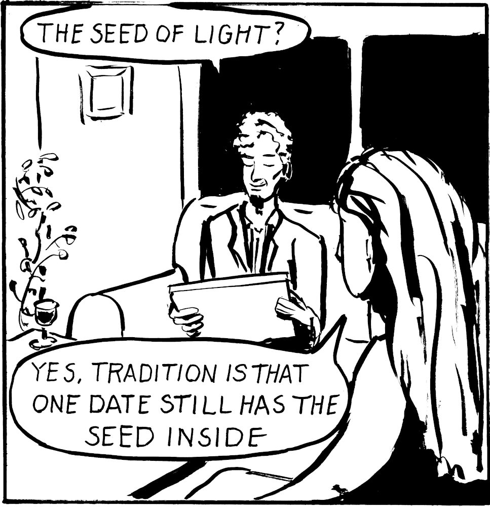

The Seed of Light
June 2026
A diamond hid in a date, a void hid in a diamond, a journalist encounters a hidden story he does not understand.
The Seed of Light is a black-and-white comic in eight pages.

Ture is a science journalist attending a Copenhagen conference when a researcher named Meira hands him a box of dates and disappears.
I have submitted it to an anthology so it's not yet available to read. If it's accepted I will provide a link to the anthology here, if not I will publish it on GlobalComix just like Little Eagle Down